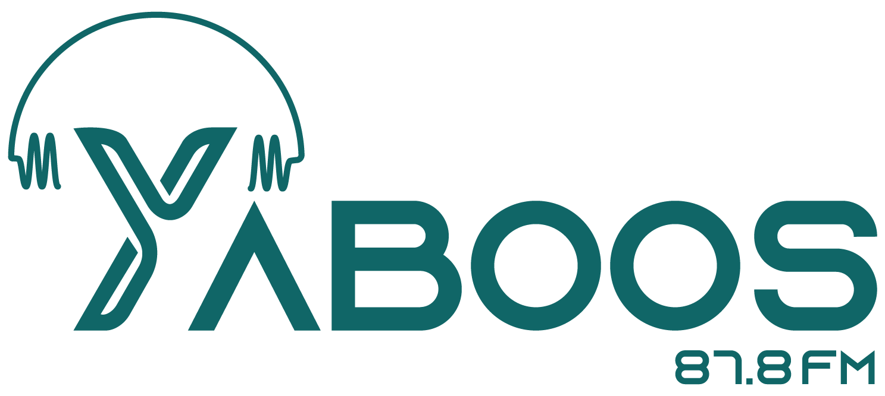

<nav class="navbar navbar-expand-lg navbar-dark bg-dark center-xs text-center" [class.bdark]="check">
    <a class="navbar-brand  pl-5" href="#"></a>
    <button class="navbar-toggler" type="button" data-target="#navbarSupportedContent" aria-controls="navbarSupportedContent" aria-expanded="false" aria-label="Toggle navigation" (click)="savechange()" *ngIf="navbtt">
    <!-- <span class="navbar-toggler-icon"></span> -->
    <span class="myspan"></span>
    <span></span>
    <span></span>
  </button>

    <button (click)="savechange1()" *ngIf="navbt" class="mysecondbutton" type="button"  data-target="#navbarSupportedContent" aria-controls="navbarSupportedContent" aria-expanded="false">
    <i class="fa fa-less-than"></i>
  </button>


    <div class="navbar-collapse justify-content-end" id="navbarSupportedContent">
        <ul class="navbar-nav">
            <li class=" navt" *ngIf="show">
                <a class="nav-link">
                    <i>  </i>
                    <span class="userresponsive">{{username}}</span>
                </a>
            </li>
            <li class="nav-item">
                <a class="nav-link " routerLink="/Home" routerLinkActive="active">
                    <i class="fas fa-home ico "></i> 
                    <span >الرئيسية</span>
                </a>
            </li>
            <li class="nav-item">
                <a class="nav-link" routerLinkActive="active" routerLink="/Libaray">
                    <i class="fas fa-music  ico"></i> 
                    <span>مكتبتى</span>

                </a>
            </li>
            <li class="nav-item">
                <a class="nav-link" routerLinkActive="active" routerLink="/Favorite">
                    <i class="fas fa-heart  ico"></i>
                    <span>المفضلة</span>

                </a>
            </li>
            <li class="nav-item">
                <a class="nav-link" routerLinkActive="active" routerLink="/Programms">
                    <i class="fas fa-microphone-alt  ico"></i>
                    <span>البرنامج</span> 
                </a>
            </li>
            <li class="nav-item">
                <a class="nav-link" routerLinkActive="active" routerLink="/Tools">
                    <i class="fa fa-cog ico"></i> 
                    <span>ادوات</span>
                </a>
            </li>
            <li class="nav-item ">
                <a class="nav-link" routerLinkActive="active" routerLink="/WhoWeAre">
                    <i class="fas fa-users ico preivacy"></i> 
                    <span>من نحن</span>
                </a>
            </li>
            <li class="nav-item ">
                <a class="nav-link" routerLinkActive="active" routerLink="/Privacy">
                    <i class="fa fa-shield ico preivacy"></i> 
                    <span>سياسة الخصوصية</span>
                </a>
            </li>
            <li class="nav-item " routerLink="/Home/login" *ngIf="show3">
                <a class="nav-link">
                    <i class="fa fa-sign-in ico"></i> تسجيل الدخول
                </a>
            </li>
            <li class="nav-item " *ngIf="show2" (click)="signupinfo()">
                <a class="nav-link">
                    <i class="fa fa-sign-in ico" style="transform: rotate(180deg);"></i> تسجيل الخروج
                </a>
            </li>

        </ul>
    </div>
</nav>
<div class="overlay" (click)="saveoutside()" *ngIf="overlay"></div>